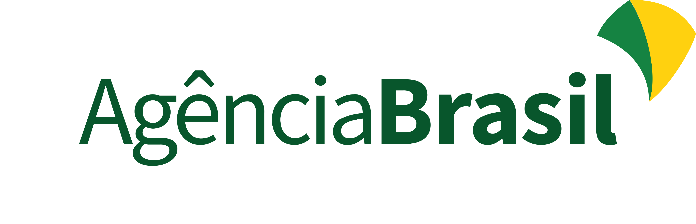

Antes de confiar,
Verifique.
Aprenda a identificar golpes, fake news e conteúdos gerados por IA através de uma plataforma simples, acessível e pensada para todos.
Conheça a plataformaNotícia recebida:
“Doutor Dráuzio Varella aparece vendendo suplementos milagrosos”
BBC e G1 confirmam: O vídeo é falso e realizado através de IA
308%
Aumento de conteúdos falsos gerados por IA
(Fonte: Agência Brasil)
US$ 442 bilhões
Prejuízo Global através de Fraudes digitais desde 2025
(Fonte: CNN)
82%
Dos idosos brasileiros já sofreram tentativas de golpes
virtuais.
(Fonte: Agência Brasil)
Como o ‘Verifica AI’ ajuda?
Plataforma Informativa para desenvolver pensamento crítico e segurança digital, com ferramentas simples.
Conteúdos informativos
Descubra maneiras de se prevenir e identificar Notícias falsas e golpes digitais.
Detector de IA
Identifique imagens, vídeos e áudios potencialmente gerados por Inteligência Artificial.
Aprendizado Gamificado
Aprenda através de desafios rápidos e conteúdo acessível para todos os públicos.
Comunidade
Interaja com outros usuários e se mantenham informados dos novos perigos digitais.
Noticiário
Receba notícias relacionadas a ações fraudulentas no âmbito digital.
Responsabilidade Jornalística
O Verifica AI possui responsabilidade jornalística, usando apenas fontes confiáveis, como:
